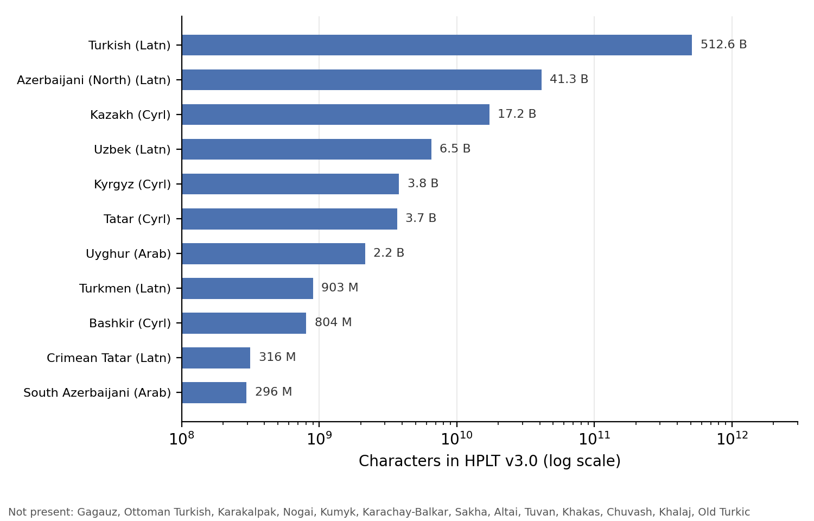
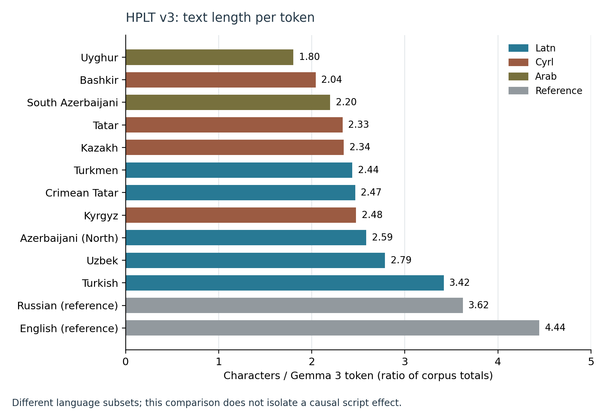
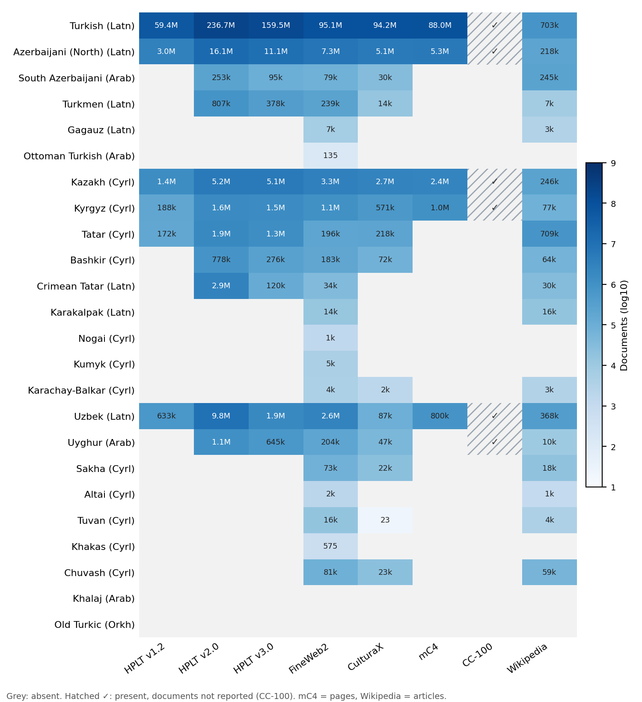
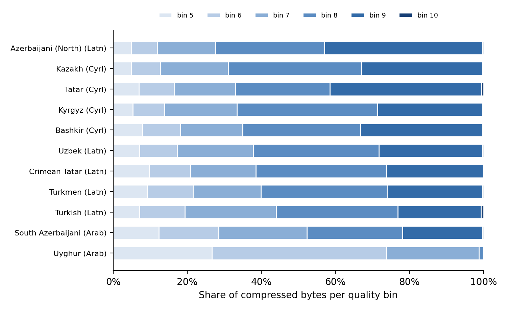
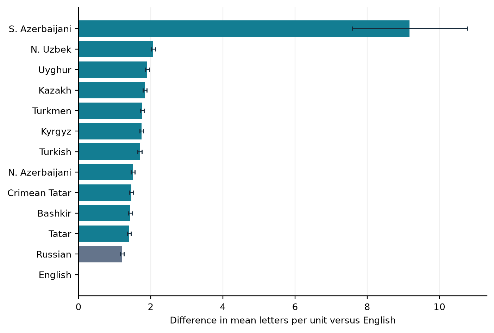

4 Building Turkic Corpora at Scale
After reading this chapter, you will be able to:
- Describe the large multilingual web corpora that contain Turkic text, and compare their coverage of the family
- Explain why a language label in a web corpus is a claim to be checked rather than a fact, and name the contamination types that are specific to Turkic text
- Audit a sample of a corpus for one Turkic language with language identification, script detection, and morphological-analyser coverage
- Design a cleaning pipeline for Turkic text, including normalisation and deduplication across scripts
- Decide how to store and release a corpus for a language written in more than one script
- Apply licensing and provenance rules when building a corpus for a small Turkic language
A web-corpus label is an automatic prediction. This chapter shows how to compare corpus releases, check a sample and build a processing pipeline. The first checks are simple: is the text in the intended language, and which script does it use?
The chapter has three parts. The first surveys what the large web corpora contain for each Turkic language and how much (Section 4.1). The second shows how to check those claims by auditing a sample (Section 4.2). The third describes how to build and release a cleaner corpus: the processing pipeline, script choice, parallel data, and licensing (Section 4.3 to Section 4.6).
4.1 What Exists: Turkic Text in Multilingual Web Corpora
4.1.1 Successive web-corpus releases
The collections below draw on multilingual web archives, including Common Crawl. They differ in how they extract text, which language identifier they use, how they filter for quality, and how they remove duplicates:
- CC-100 (Conneau et al. 2020) was built to train XLM-R. It includes Turkish, Azerbaijani, Kazakh, Kyrgyz, Uzbek, and Uyghur, but not Tatar, Bashkir, Turkmen, Chuvash, or Sakha.
- mC4 (Xue et al. 2021) was built to train mT5. It has five Turkic languages: Turkish, Azerbaijani, Kazakh, Kyrgyz, and Uzbek.
- CulturaX (Nguyen et al. 2024) combines and re-cleans mC4 and OSCAR, another Common Crawl corpus. It lists 14 Turkic languages; ten of them have fewer than 250,000 documents, and Tuvan has 23.
- MADLAD-400 (Kudugunta et al. 2023) covers more than 400 languages, and its authors audited samples of each language by hand.
- HPLT is represented here by three releases: v1.2 (Gibert et al. 2024), v2.0 (Burchell et al. 2025), and v3.0 (HPLT Consortium 2025; Oepen et al. 2026). Each re-extracts text from web archives. The language identifier changed between releases: CLD2 for v1.2, a modified OpenLID (Burchell et al. 2023) for v2.0, and OpenLID-v2 for v3.0.
- FineWeb2 (Penedo et al. 2025) adapts its filtering pipeline to each language. Its language identifier, GlotLID (Kargaran et al. 2023), has many more labels than OpenLID, and FineWeb2 provides the language/script subsets listed in the inventory below, several of them in more than one script.
4.1.2 How much text: HPLT v3.0 as a worked example
HPLT v3.0 publishes a machine-readable manifest with the size of every language subset: documents, characters, and tokens under the Gemma 3 tokeniser. Table 4.1 lists the Turkic subsets, and Figure 4.1 shows their sizes on a logarithmic scale.
| Language | Subset | Documents (M) | Characters (B) | Gemma 3 tokens (B) | Characters per token | Compressed-byte share in bins 8–10 |
|---|---|---|---|---|---|---|
| Turkish | tur_Latn |
159.47 | 512.61 | 149.98 | 3.42 | 56% |
| Azerbaijani (North) | azj_Latn |
11.07 | 41.26 | 15.96 | 2.59 | 72% |
| Kazakh | kaz_Cyrl |
5.12 | 17.21 | 7.34 | 2.35 | 69% |
| Uzbek | uzn_Latn |
1.88 | 6.51 | 2.34 | 2.79 | 62% |
| Kyrgyz | kir_Cyrl |
1.49 | 3.80 | 1.54 | 2.48 | 67% |
| Tatar | tat_Cyrl |
1.26 | 3.69 | 1.58 | 2.33 | 67% |
| Uyghur | uig_Arab |
0.65 | 2.16 | 1.20 | 1.80 | 1% |
| Turkmen | tuk_Latn |
0.38 | 0.90 | 0.37 | 2.44 | 60% |
| Bashkir | bak_Cyrl |
0.28 | 0.80 | 0.39 | 2.04 | 65% |
| Crimean Tatar | crh_Latn |
0.12 | 0.32 | 0.13 | 2.47 | 62% |
| South Azerbaijani | azb_Arab |
0.09 | 0.30 | 0.13 | 2.20 | 48% |
| Russian (reference) | rus_Cyrl |
3,304.96 | 15,950.00 | 4,402.59 | 3.62 | — |
| English (reference) | eng_Latn |
18,057.79 | 72,336.99 | 16,280.22 | 4.44 | — |

Three observations follow.
The sizes span more than three orders of magnitude. Turkish has about 1,600 times as many characters as Crimean Tatar and 1,700 times as many as South Azerbaijani. Kazakh has 3% of the Turkish total. Russian, the main contact language of Kazakh, Kyrgyz, Tatar and Bashkir, has about 900 (Kazakh) to 20,000 (Bashkir) times as many characters in the same release.
Count subsets before counting languages. The manifest separates North (azj) and South Azerbaijani (azb) and lists eleven Turkic subsets altogether. A language without its own subset may still have pages in the crawl, assigned another label, filtered out or left unclassified. Define the release-specific mapping from subsets to languages before reporting coverage.
Characters per token vary across the HPLT language subsets. Dividing character totals by Gemma 3 token totals gives 1.80 for Uyghur, 3.42 for Turkish and 4.44 for English (Figure 4.2). Latin and non-Latin ranges overlap. This measures text length per token in different corpora; it is not the tokens-per-word fertility measure of Section 7.1 and does not isolate a causal script effect. Corpus composition, orthographic conventions and tokeniser behaviour can all affect the ratio.

4.1.3 Comparing corpora and corpus generations
Table 4.2 and Figure 4.3 compare eight sources by document count, using pages for mC4 and articles for Wikipedia. Most sources report this unit, whereas their word and token counts use incompatible definitions. Document boundaries also vary: one corpus may split a page that another retains whole.
| Language | Branch | HPLT v1.2 | HPLT v2.0 | HPLT v3.0 | FineWeb2 | CulturaX | mC4 | CC-100 | Wikipedia |
|---|---|---|---|---|---|---|---|---|---|
| Turkish | Oghuz | 59.4M | 236.7M | 159.5M | 95.1M | 94.2M | 88.0M | ✓ | 703k |
| Azerbaijani (North) | Oghuz | 3.0M | 16.1M | 11.1M | 7.3M | 5.1M | 5.3M | ✓ | 218k |
| South Azerbaijani | Oghuz | — | 253k | 95k | 79k | 30k | — | — | 245k |
| Turkmen | Oghuz | — | 807k | 378k | 239k | 14k | — | — | 7k |
| Gagauz | Oghuz | — | — | — | 7k | — | — | — | 3k |
| Ottoman Turkish | Oghuz (historical) | — | — | — | 135 | — | — | — | — |
| Kazakh | Kipchak | 1.4M | 5.2M | 5.1M | 3.3M | 2.7M | 2.4M | ✓ | 246k |
| Kyrgyz | Kipchak | 188k | 1.6M | 1.5M | 1.1M | 571k | 1.0M | ✓ | 77k |
| Tatar | Kipchak | 172k | 1.9M | 1.3M | 196k | 218k | — | — | 709k |
| Bashkir | Kipchak | — | 778k | 276k | 183k | 72k | — | — | 64k |
| Crimean Tatar | Kipchak | — | 2.9M | 120k | 34k | — | — | — | 30k |
| Karakalpak | Kipchak | — | — | — | 14k | — | — | — | 16k |
| Nogai | Kipchak | — | — | — | 1k | — | — | — | — |
| Kumyk | Kipchak | — | — | — | 5k | — | — | — | — |
| Karachay-Balkar | Kipchak | — | — | — | 4k | 2k | — | — | 3k |
| Southern Altai | Kipchak | — | — | — | 2k | — | — | — | 1k |
| Uzbek | Karluk | 633k | 9.8M | 1.9M | 2.6M | 87k | 800k | ✓ | 368k |
| Uyghur | Karluk | — | 1.1M | 645k | 204k | 47k | — | ✓ | 10k |
| Sakha | Siberian | — | — | — | 73k | 22k | — | — | 18k |
| Tuvan | Siberian | — | — | — | 16k | 23 | — | — | 4k |
| Khakas | Siberian | — | — | — | 575 | — | — | — | — |
| Chuvash | Oghur | — | — | — | 81k | 23k | — | — | 59k |

Which languages appear depends on the language identifier. Five languages (Turkish, Azerbaijani, Kazakh, Kyrgyz, Uzbek) are in all eight sources. CC-100 and HPLT v1.2 each have six Turkic languages, mC4 five. FineWeb2, whose identifier has the largest label set, is the only one of these web corpora with Nogai, Kumyk, Khakas, Altai, Gagauz, and Karakalpak. Their subsets are small (575 documents for Khakas, 1,393 for Nogai), but they exist.
The same language differs by an order of magnitude between corpora. Uzbek has 9.8 million documents in the deduplicated HPLT v2.0 release, 2.6 million in FineWeb2, and 87,000 in CulturaX. Filtering, deduplication and language labels all differ between these corpora; the audit in Section 4.2 is needed to tell how much each contributes.
Release stages change the comparison. Table 4.3 follows eleven HPLT subsets across three releases. Crimean Tatar appears to shrink from 2.9 million documents (2.0 billion characters) in deduplicated v2.0 to 120,000 (0.3 billion) in v3.0. Yet the cleaned v2.0 release already contains just 123,000 Crimean Tatar documents. That cleaning stage filters low language-identification probabilities, low Web Docs Scorer values and other signals (Burchell et al. 2025, sec. 4.2).
Most of the apparent decline therefore occurred within v2.0. We have not established which filter removed those documents or what languages they contained. Against cleaned v2.0, every other Turkic subset grows in v3.0. Uzbek rises from 707,000 documents to 1.9 million.
| Language | Subset | Docs v1.2 | Docs v2.0 dedup. | Docs v2.0 cleaned | Docs v3.0 | Chars v2.0 dedup. | Chars v2.0 cleaned | Chars v3.0 |
|---|---|---|---|---|---|---|---|---|
| Turkish | tur_Latn |
59.4M | 236.7M | 116.6M | 159.5M | 544.0B | 389.8B | 512.6B |
| Azerbaijani (North) | azj_Latn |
3.0M | 16.1M | 6.5M | 11.1M | 34.7B | 19.6B | 41.3B |
| Kazakh | kaz_Cyrl |
1.4M | 5.2M | 2.6M | 5.1M | 15.4B | 11.1B | 17.2B |
| Uzbek | uzn_Latn |
633k | 9.8M | 707k | 1.9M | 10.3B | 2.8B | 6.5B |
| Kyrgyz | kir_Cyrl |
188k | 1.6M | 676k | 1.5M | 2.6B | 1.9B | 3.8B |
| Tatar | tat_Cyrl |
172k | 1.9M | 631k | 1.3M | 3.2B | 2.2B | 3.7B |
| Uyghur | uig_Arab |
— | 1.1M | 442k | 645k | 2.5B | 1.7B | 2.2B |
| Turkmen | tuk_Latn |
— | 807k | 171k | 378k | 1.6B | 570.2M | 902.8M |
| Bashkir | bak_Cyrl |
— | 778k | 171k | 276k | 1.0B | 558.7M | 803.7M |
| Crimean Tatar | crh_Latn |
— | 2.9M | 123k | 120k | 2.0B | 281.2M | 315.9M |
| South Azerbaijani | azb_Arab |
— | 253k | 66k | 95k | 445.3M | 260.3M | 296.1M |
Article counts tell only part of the story. Tatar Wikipedia has 709,000 articles, compared with 196,000 Tatar documents in FineWeb2. South Azerbaijani Wikipedia has 245,000 articles against 79,000 FineWeb2 documents. To compare running text, also measure article lengths and the share of automatically generated articles.
4.1.4 Common Crawl itself
Common Crawl publishes, for every snapshot, the number of pages per primary language as detected by CLD2. Figure 4.4 shows the Turkic shares in all 77 snapshots from August 2018 to September 2026.
Turkish makes up 1.28% of the pages in the latest snapshot. Every other Turkic language is below 0.1%: Azerbaijani 0.061%, Kazakh 0.043%, Uzbek 0.031%, and Uyghur 0.0016%. Russian, for comparison, has 6.7%. Between the first and the latest snapshot, the reported shares of Kazakh, Uzbek, and Kyrgyz roughly tripled, while Turkish grew by about half. The statistics report only nine Turkic CLD2 labels, so the rest of the family is invisible in them: those pages are counted under other labels or as unknown.
4.1.5 National and curated corpora
Web corpora are not the only source. Several Turkic languages have national reference corpora, built by language institutes with documented sources and annotation. The Turkish National Corpus is one example (Aksan et al. 2012). Wikipedia is another candidate source: its provenance is known, but language and quality still require checking, and its article counts (Table 4.2) do not measure running text.
4.2 What the Labels Hide: Auditing a Corpus
4.2.1 Why labels fail for Turkic languages
A language label in a web corpus is the output of an automatic classifier applied to each document. Kreutzer et al. (2022) audited samples of several multilingual corpora by hand and found that, for many low-resource languages, a large share of the text was in the wrong language or was not language at all. For Turkic languages, seven sources of error need checking:
- A close neighbour gets the label. Shared spellings can make related languages hard to distinguish. On a 20-sentence challenge set, GlotLID restricted to Turkic labels assigned Turkish to 18 of 20 Gagauz sentences; its most frequent wrong label was Karachay-Balkar for Kumyk and Kyrgyz for Nogai, Altai, and Tuvan (Table 3.6, Figure 3.4).
- Russian inside Cyrillic pages. Pages from Kazakhstan, Kyrgyzstan, Tatarstan, Bashkortostan, and Sakha can mix Russian and the Turkic language: bilingual navigation, comments, and quotations. A script detector sees only Cyrillic. Only a word- or sentence-level language check finds the Russian.
- Several scripts and orthographies for one language. Uzbek is written in Latin and Cyrillic; Kazakh in Cyrillic and in Latin text that may follow different proposals or informal conventions; Uyghur in Arabic script, Latin, and Cyrillic; Azerbaijani in Latin and, in Iran, Arabic script (Section 3.2). A corpus may keep only one script, mix them silently, or split them into separate subsets.
- Lookalike letters. Special letters such as Kazakh ә ғ қ ң ө ұ ү һ і or Bashkir ҙ ҫ can be replaced in web text by Latin lookalikes or other substitutes (Section 3.3).
- Informal Latin typing. Text in a Cyrillic-script Turkic language may be typed in an ad hoc Latin transcription, and Turkish may be typed without its special letters.
- Machine-translated and automatically generated text. Machine-translated pages and automatically generated articles can enter web subsets and Wikipedias. Their share in Turkic corpora has not been measured here.
- Arabic-script confusion. South Azerbaijani, Uyghur, Persian, and Ottoman Turkish share a script.
4.2.2 A Method for Auditing
Define the sampling unit (document), corpus revision, subset and complete population before sampling. Keep original IDs and raw text. A document sample estimates document shares, not token shares. Human labels from qualified evaluators are the reference; automatic scores are screening signals.
The functions in corpus.py report script shares over letters, sentence-level target/Russian/other shares, and raw FST coverage over alphabetic word tokens. Empty denominators return None. A recognised word needs a finite, non-failure FST reading. A copied surface form, truthy lemma or nonempty UD field is insufficient. The helper also excludes <unk> guesses, such as the Bashkir analyser’s Weezy<np><unk>. These choices define lookup coverage; analysis accuracy and language labels still need independent reference data.
Construct the tokeniser, sentence splitter, unrestricted language identifier and target-language FST once and reuse them. Pass the exact expected label (for example __label__kir_Cyrl) rather than a prefix test. Rebuild all language-dependent objects when changing language; changing only a global LANG leaves the old analyser active. Newlines are not automatically sentence boundaries.
from corpus import audit # code/ch04-corpus on PYTHONPATH
def audit_document(row, splitter, tokenize, lid_model, fst_lookup, target_label):
return {"id": row["id"], **audit(
row["text"], splitter(row["text"]), target_label,
predict_all=lambda s: lid_model.predict(s, k=1)[0][0],
lookup=fst_lookup, words=tokenize(row["text"]))}lid_model here is the underlying unrestricted model, not a Turkic-only candidate wrapper. Otherwise Russian text is forced into a Turkic label and a target-share estimate becomes misleading. Save model/transducer revisions, segmentation policy, raw labels and denominators in the audit manifest. Compare signals on separately labelled development and test samples before choosing thresholds.
4.2.3 HPLT’s quality bins
HPLT v3.0 sorts the documents of each language into Web Docs Scorer quality bins; the release contains bins 5 to 10, with higher bins for higher scores (Oepen et al. 2026). Figure 4.5 shows how the data of each Turkic subset is distributed across the bins.

Nine of the eleven subsets place 56–72% of their compressed bytes in bins 8–10. South Azerbaijani has 48%. Uyghur has just 1%, with almost all its data in bins 5–7. Several explanations remain possible: scorer calibration on Arabic-script text, domain composition or extraction quality. If calibration is responsible, a strict threshold could discard useful Uyghur text. If the subset is noisier, more cleaning may help. Inspect samples to distinguish these cases. Compression ratios vary too, so the byte shares cannot be read as document or token shares.
4.3 A Pipeline for Turkic Text
4.3.1 Order matters
The steps of a corpus pipeline interact. The following order avoids most of the problems discussed here and in Chapter 3:
- Collect from sources whose language and orthography are documented, and keep the URL, date, licence or terms, and the original bytes.
- Decode and normalise to a known encoding and create an NFC copy, with selective NFKC for Arabic presentation-form characters (Section 3.3). Keep the raw text; delay language-specific repairs (lookalike letters, apostrophes) until step 4.
- Identify the language before any transliteration, at sentence or document level. An unrestricted model can predict Russian or English; it may still assign noise a language label. Add an explicit rejection policy and use a Turkic-only label set only for text already established as Turkic (Section 3.7). Record candidates and scores, and route uncertain text to an “unknown” bin. Conversion changes native-script cues: on converted text, GlotLID accuracy fell to 48.1% in the TurkicNLP evaluation (Hakimov 2026).
- Detect the script per document and per span, and record the orthography version as metadata (for example Kazakh Cyrillic, 2018 Latin or 2021 Latin; Uzbek Cyrillic or Latin) rather than silently converting (Section 4.4).
- Handle mixed-language segments and boilerplate under the collection’s declared inclusion policy; Russian quotations are not automatically corrupt text.
- Filter for quality, with thresholds set per language (below).
- Deduplicate with a derived key that unifies apostrophe variants and, where needed, converts to one script, so that the same text in two variants counts once (below). Make the train/dev/test split at the level of duplicate clusters or sources, before creating script variants, so that a native and a converted copy cannot end up on opposite sides of the split.
- Normalise orthography and convert scripts in a derived copy only: the Turkish İ/ı casing rules, the Uzbek apostrophe variants for oʻ, gʻ and the tutuq belgisi, and optionally conversion to a common script (Section 3.5). The archival copy keeps the original.
- Document permissions and personal data: record the licence or terms of each source, and remove or mask personal data before releasing a derived corpus (Section 4.6).
4.3.2 Adapting English-Derived Quality Filters
Some web-corpus filters use word length, common words, repetition and symbol counts. The Gopher rules (Rae et al. 2021), as implemented in datatrove, include a mean word length of 3–10 characters and at least two words from an eight-word English list. These defaults need checking before use on Turkic text. FineWeb2 estimates language-specific thresholds (Penedo et al. 2025).
The aligned FLORES measurement below compares word lengths without mixing release and development treebanks. How many web documents a filter would reject is another matter. In particular, a rule requiring English stop words can reject valid Turkic text. FineWeb2 instead estimates thresholds and word lists per language (Table 4.4).
Some estimated stop-word lists suggest which domains to inspect. Among the first eight entries for Cyrillic Azerbaijani, Cyrillic Gagauz and Khakas are јеһова ‘Jehovah’, иисус ‘Jesus’ or худай ‘God’; Cyrillic Crimean Tatar includes рабби ‘Lord’. Kazakh, Bashkir and Chuvash lists contain words for ‘water’ and ‘river’ (су, өзен; һыу, йылға; шыв, юханшыв, respectively). They tell you where to sample; they say nothing about how large each domain is. FineWeb2 derived the lists from its own data; this chapter supplies no independent audit.
max_non_alpha_words_ratio in datatrove); line punct.: minimum share of lines ending in punctuation (off = disabled; a threshold of 0.0 has the same effect); dup. lines: maximum share of duplicated lines; top 2-gram: maximum share of characters in the most frequent word bigram (values above 1 disable the rule); LID score: minimum language-ID confidence; stop words: size of the list (a document needs at least 2 of them). Sources: github.com/huggingface/fineweb-2 configs/*.yml and datatrove filter defaults (main branch), accessed 12 October 2026.
| Subset | Avg word length | Alpha words (min) | Line punct. | Dup. lines | Top 2-gram | LID score | Stop words |
|---|---|---|---|---|---|---|---|
| English defaults | 3–10 | 0.8 | 0.12 | 0.3 | 0.2 | — | 8 |
rus_Cyrl |
3–11 | 0.713 | 0.231 | 0.322 | 0.184 | 0.9 | 22 |
tur_Latn |
3–21 | 0.773 | 0.091 | 0.272 | 0.214 | 0.875 | 16 |
azj_Latn |
3–13 | 0.725 | 0.188 | 0.879 | 0.514 | 0.3 | 22 |
azb_Arab |
3–14 | 0.719 | 0.111 | 0.379 | 0.403 | 0.3 | 14 |
tuk_Latn |
1–24 | 0.769 | 0.0 | 0.276 | 0.406 | 0.666 | 22 |
gag_Latn |
2–24 | 0.778 | 0.0 | 0.536 | 0.628 | 0.3 | 19 |
kaz_Cyrl |
3–12 | 0.694 | 0.176 | 0.304 | 0.172 | 0.844 | 24 |
kir_Cyrl |
4–12 | 0.623 | 0.133 | 0.311 | 0.247 | 0.756 | 31 |
tat_Cyrl |
3–11 | 0.692 | 0.333 | 0.356 | 0.26 | 0.86 | 8 |
bak_Cyrl |
3–11 | 0.72 | 0.222 | 0.217 | 0.221 | 0.9 | 25 |
crh_Latn |
3–19 | 0.679 | 0.167 | 0.774 | 0.595 | 0.3 | 20 |
kaa_Latn |
2–17 | 0.714 | 0.05 | 0.275 | 0.844 | 0.3 | 14 |
nog_Cyrl |
3–13 | 0.688 | off | 0.331 | 0.783 | 0.357 | 13 |
kum_Cyrl |
3–11 | 0.744 | off | 0.434 | 0.62 | 0.65 | 15 |
krc_Cyrl |
2–11 | 0.743 | 0.0 | 0.498 | 0.578 | 0.3 | 27 |
uzn_Latn |
3–13 | 0.691 | 0.25 | 0.254 | 0.871 | 0.631 | 21 |
uig_Arab |
2–15 | 0.782 | 0.0 | 0.293 | 0.2 | 0.874 | 16 |
sah_Cyrl |
1–13 | 0.711 | 0.143 | 0.401 | 0.547 | 0.3 | 20 |
alt_Cyrl |
4–9 | 0.671 | 0.286 | 0.7 | 1.337 | 0.3 | 22 |
tyv_Cyrl |
2–11 | 0.682 | 0.167 | 0.285 | 0.327 | 0.642 | 8 |
kjh_Cyrl |
3–12 | 0.7 | off | 0.594 | 1.052 | 0.3 | 42 |
chv_Cyrl |
3–11 | 0.68 | 0.116 | 0.243 | 0.205 | 0.732 | 50 |
4.3.3 A source-aligned orthographic-length check
A complementary measurement uses all 1,012 aligned rows of original FLORES-200 devtest in eleven Turkic varieties, English and Russian (NLLB Team et al. 2024). The count covers Unicode letters in each whitespace-delimited unit containing at least one letter, after NFC normalisation. It averages units within each sentence and then weights sentences equally. This definition excludes punctuation from the length count; it does not segment morphemes.

Spacing anomalies dominate the South Azerbaijani bar: 83 of 1,012 rows contain only one whitespace unit, and 128 average more than 30 letters per unit (audit_spacing.py). Row 198, for example, has 227 letters without an internal space. The audit retains and lists these rows. The bar thus shows how formatting affects the measurement; it cannot serve as a language-level word-length estimate.
Matching the translated source rows removes one source of content variation, but translations and orthographic conventions still differ. The intervals describe resampling these sentences, not uncertainty over the population of web documents; source-article clustering is not modelled. The saved results also include a contiguous-letter-run definition for sensitivity checking. Neither definition measures morphological complexity, and neither validates a quality filter. That requires independently labelled documents.
4.3.4 Deduplication across scripts
Character-overlap methods can miss duplicates published in different scripts. An Uzbek story in Latin and Cyrillic may share little written text even when the content is the same. After both versions are converted to one script, the overlap can be measured. The same holds for Kazakh text in Cyrillic and in one of the Latin designs. Figure 3.3 showed the effect of conversion for related languages; its effect on duplicate detection for the same language in two scripts can be measured on labelled document pairs.
After a versioned script conversion, a deduplication key can normalise Uzbek o/g letter marks with uzbek_letter_apostrophes in corpus.py. The helper maps apostrophe variants after o or g to U+02BB, while TurkicNLP uses U+0027 (Section 3.5). Either convention can work if applied consistently. Keep tutuq signs and quotation punctuation distinct.
MinHash requires further choices: character shingles, hash count and similarity threshold, tuned on labelled pairs. Since conversion can merge different originals, treat key matches as candidates and measure false merges. Build duplicate/source clusters before assigning train/dev/test splits.
4.3.5 Personal data
Web text contains names, phone numbers, addresses, and identity numbers. Turkic-specific patterns include national identification numbers with fixed formats, such as the Turkish T.C. kimlik numarası and the Kazakh individual identification number (IIN). Remove or mask these before releasing any derived corpus.
4.4 Choosing a Script for the Corpus
For a language written in more than one script, the corpus builder has to decide what to store and what to release. Three rules work well:
- Keep the original. Store every document in the script it was published in, with the detected script and orthography version as metadata. Conversion can lose information: in the toolkit’s CTS mapping, for example, Kazakh у and ұ both become u (Section 3.6), so the original cannot always be recovered from the converted text.
- Release conversions as derived data. A version in a common script, such as the toolkit’s CTS mapping (Section 3.6) or an official Latin alphabet, is useful for training. Release it next to the original, not instead of it.
- Say what was merged. If Uzbek Latin and Cyrillic are merged into one training set, or Kazakh text in several Latin designs is normalised to the 2021 design, document the conversion and the mapping version.
4.5 Parallel and Comparable Data
Parallel text expresses corresponding content in two languages. It provides supervision for machine translation (Chapter 10) and cross-lingual sentence embeddings (Section 13.3), though both also have methods that learn without sentence-aligned data. For Turkic languages, useful sources include:
- Curated collections: OPUS (Tiedemann 2012), the TIL corpus with its X-WMT test sets (Mirzakhalov et al. 2021), and FLORES-200 (NLLB Team et al. 2024).
- Bilingual institutional websites: governments and news agencies that publish in a Turkic language and in Russian or English.
- Religious texts: translated texts are one possible source; FineWeb2’s word lists suggest checking for them in some subsets (Table 4.4). Check their licences before including them.
- Comparable text, such as Wikipedia articles on the same topic, from which parallel sentences can be mined.
Mining parallel sentences usually relies on multilingual sentence embeddings such as LaBSE or LASER (Feng et al. 2022; Heffernan, Çelebi, and Schwenk 2022), scored with a margin criterion (Artetxe and Schwenk 2019). For very close pairs, such as Turkish–Gagauz or Kazakh–Kyrgyz, string similarity after conversion to a common script (Figure 3.3) is a candidate retrieval signal or extra filter; its precision has to be checked by hand (Exercise 3).
4.6 Licensing, Provenance, and Sovereignty
Check the terms for both the corpus release and its source material. A licence on the compilation may not cover redistribution of every source page.
- Prefer releasing IDs and labels. When an audit or a filtered subset is shared, consider sharing document identifiers, scores and labels when the text cannot be redistributed. It does not remove rights or privacy obligations.
- Check religious and literary texts individually. A text that is free to read online may come with terms that forbid text and data mining or redistribution.
- National law differs. Copyright exceptions for text and data mining differ between the countries where Turkic languages are spoken.
- Document the corpus. A datasheet records sources, collection dates, filters, known problems, and intended uses. For a small language, record the community’s position on its use as well (Section 17.4).
4.7 Hands-On: Auditing a Corpus Sample
Question. What kinds of unwanted text do the audit signals detect?
Inputs. A documented sample, unrestricted language identification, script checks and an analyser.
Compute. CPU inference and resource downloads; size the sample before processing a full corpus.
Output. Per-document signals, reviewed errors and a provenance manifest.
Interpretation. Calibrate decisions against reviewed documents before selecting thresholds.
Worked step. Exercise 1 first runs the audit on documents of known composition: five-sentence X-WMT documents in Kyrgyz, in its neighbour Kazakh, in Russian, mixed (three Kyrgyz and two Russian sentences), and Kyrgyz converted to CTS, 20 of each. The recorded output uses GlotLID v3 and the Apertium Kyrgyz analyser; the illustrative “kept” rule requires a target share and an analyser coverage of at least 0.6.
document type target Russian FST cov. Cyrillic kept
target 1.00 0.00 0.83 0.98 20/20
neighbour 0.00 0.00 0.28 0.97 0/20
Russian 0.00 1.00 0.09 0.97 0/20
target 3 + Russian 2 0.60 0.40 0.52 0.97 4/20
target in CTS 0.00 0.00 0.00 0.00 0/20Language identification separates whole documents cleanly, and analyser coverage agrees with it. Mixed documents are the hard case: the rule keeps only 4 of 20, although 60% of their sentences are Kyrgyz. Kyrgyz in CTS is lost entirely: GlotLID labels it mostly as Turkish or Gagauz, and the Cyrillic analyser rejects it. Audit before converting. These are constructed documents; a real corpus needs a hand-labelled sample to set thresholds.
Status: demonstration. The table is recorded output of Exercise 1 on constructed documents; an audit of a real web corpus is a procedure to run on its own sample.
What to Take Forward
Start an audit from the corpus label, then inspect what it contains. The Uzbek counts in Section 4.1 show how widely collections can differ. Sample documents for the intended task, preserve their provenance through processing, and check permissions before release. Chapter 5 introduces the word analyses used in later text-processing methods.
Further Reading
- Kreutzer et al. (2022) is the reference audit of multilingual web corpora and the model for Section 4.2.
- The corpus papers describe their pipelines and language identifiers: CC-100 (Conneau et al. 2020), mC4 (Xue et al. 2021), CulturaX (Nguyen et al. 2024), MADLAD-400 (Kudugunta et al. 2023), HPLT (Gibert et al. 2024; Burchell et al. 2025; Oepen et al. 2026), and FineWeb2 (Penedo et al. 2025).
- GlotLID (Kargaran et al. 2023) and OpenLID (Burchell et al. 2023) are used by the corpora discussed here.
- Glot500 (Imani et al. 2023) built a corpus and a model for more than 500 languages; its language list shows which smaller Turkic languages it covers.
Exercises
- Audit another language. Use the method in Section 4.2 to audit samples for two Turkic languages in the same corpus. Which contamination type dominates in each, and how do they compare?
- Lookalike letters. For Kazakh or Bashkir, count the tokens in a corpus sample that mix Latin and Cyrillic letters. Build a repair table for the 20 most frequent substitutions, and measure how much the repair raises analyser coverage.
- Mining with a shared script. Mine Kazakh–Kyrgyz sentence pairs from comparable Wikipedia articles in two ways: character overlap after conversion to CTS, and LaBSE similarity. Check 100 pairs from each method by hand. Which is more precise, and where does each fail?
- Absent languages. Choose one language that is absent from HPLT v3.0 (Table 4.1). Find three web sources for it, estimate how much text they hold, and run GlotLID on a sample. Under which labels would this text end up in a web corpus?